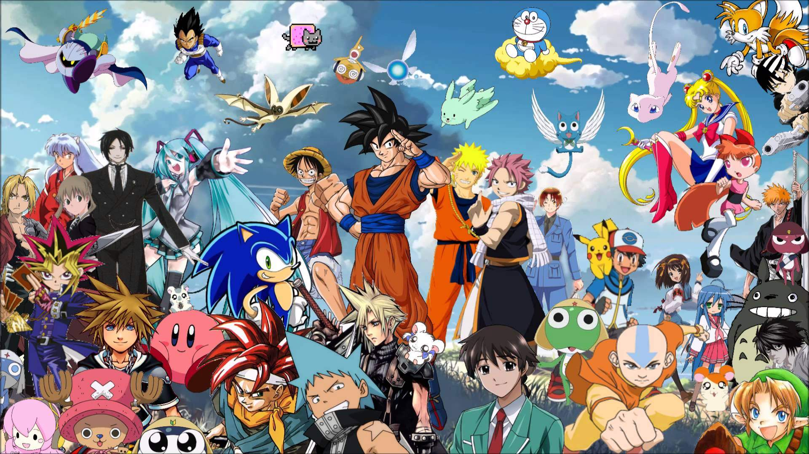

O que é anime?
Basicamente, animes são os desenhos animados produzidos no Japão. Para os japoneses os animes são todos os desenhos animados, independente da sua origem, nacional ou estrangeira. Para o mundo ocidental os animes são apenas os desenhos animados do Japão.
O que é Otaku?
A palavra Otaku [オタク] é um termo japonês utilizado para referir-se a pessoas que são viciadas em alguma coisa,mas no Brasil e em outros países ocidentais, o termo é utilizado apenas para rotular as pessoas que são fãs de animes, mangás e de outros aspectos da cultura pop japonesa.E lembrando que é uma palavra Unissex